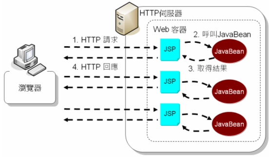
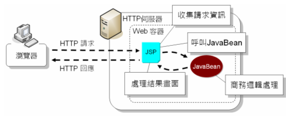

|
|
在 關於 MVC/Model 2曾
經簡介過Model 2架構，使用Model
2架構的目的，在於將整個應用程式區分為這三大角色，在應用程式龐大而需要不同團隊分工並互相合作時，使用Model
2架構可釐清職責界限，例如讓網頁設計人員專心設計網頁，而不用擔心如何撰寫Java程式碼或處理請求，讓Java程式設計人員專心設計商務模型元件，而
不用理會畫面上如何呈現。 然而使用Model 2架構，代表了更多的請求轉發流程控制、更多的元件設計以及更多的程式碼，對於中小型應用程式來說，前期必須花費更多的時間與設計成本，在開發上不見得比較划算（有時該思考一下，是否真的需要使用到Model 2架構所帶來的彈性？）。 在 簡介 <jsp:useBean>、<jsp:setProperty> 與 <jsp:getProperty> 中所示範的登入程式，使用了JSP結合JavaBean，其實就是俗稱Model 1架構的一個簡單範例。  在Model 1架構上，使用者會直接請求某個JSP頁面（而非經由控制器的轉發），JSP會收集請求參數並呼叫JavaBean來處理請求。商務邏輯的部份封裝至 JavaBean中，JavaBean也許還會呼叫一些後端的元件（例如操作資料庫）。JavaBean處理完畢後，JSP會再從JavaBean中提取 結果，進行畫面的呈現處理。  由於Model 1架構中，JSP頁面還負責了收集請求參數與呼叫JavaBean的職責，維護JSP的人工作加重。JSP中如果夾雜HTML與Java程式，也不利 Java程式設計人員與網頁設計人員的分工合作。即使透過之後將介紹的運算式語言（Expression Language, EL）及JSTL標籤來處理畫面邏輯，有些情況下可能仍無法避免使用Scriptlet。也就是說JSP頁面中有些情況下，仍不免有與頁面呈現無關的邏輯 存在，而必須靠Java程式碼來實現這部份。 但使用Model 1可以減少請求轉發的流程設計與角色區隔，在中小型應用程式具需快速開發上有其優點。 若你使用Model 2架構，由於請求參數處理、請求轉發、畫面呈現轉發等，都放在控制器中，因此在畫面的部份，可以作到只存在與畫面相關的邏輯，而這些畫面相關邏輯，則可以 使用EL、JSTL或其它自訂標籤來完全處理掉，也就是可以作到畫面設計時完全不出現Scriptlet。EL、JSTL或其它自訂標籤對於網頁設計人員 來說，相對來說比較容易學習與使用，因此對於嚴格界定職責與分工合作的應用程式來說，一般都鼓勵使用Model 2架構。 |